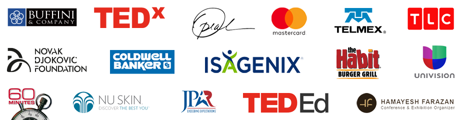

DIS-ARMING NICK
Nick Vujicic (“voo-yi-chich”) is an Australian-American born without arms or legs who has become a world-renowned speaker, New York Times best-selling author, coach and entrepreneur.
Nick faced tremendous obstacles in life from, living life without limbs, to being bullied at school and fearful for his future with no purpose in sight. Without hope, his feelings of helplessness and isolation led him to attempt suicide. Nick persevered through life’s challenges and discovered key principles which enabled him to find his purpose and turn obstacles into opportunities; making him one of the most sought-after keynote speakers in the world! Millions of people have found hope, purpose and the strength to overcome their challenges through Nick’s inspirational speeches and powerful coaching.
Nick is an anti-bullying advocate who travels the globe speaking to millions of students in partnership with Education Departments of several Governments. Nick has created an innovative Social Emotional Learning (SEL) Curriculum called “Attitude Is Altitude,” wherein he teaches students to make positive changes in their lives and their communities.
He is also the founder and CEO of the non-profit ministry Life Without Limbs.
Nick has been featured on BBC, 60 Minutes Australia, CBS Sunday Morning, Oprah’s LifeClass, USA Today, People Magazine, ABC News, The Glenn Beck Program TLC, LA Stories, and many more. He personally connects with his huge social media following through “The Nick Vujicic Podcast”, and engages through webinars and coaching.
Husband to his beautiful wife Kanae and father of four children, Nick’s passion is to inspire and equip the world to know that we all can rise above adversity and overcome every disability of the heart and mind!
